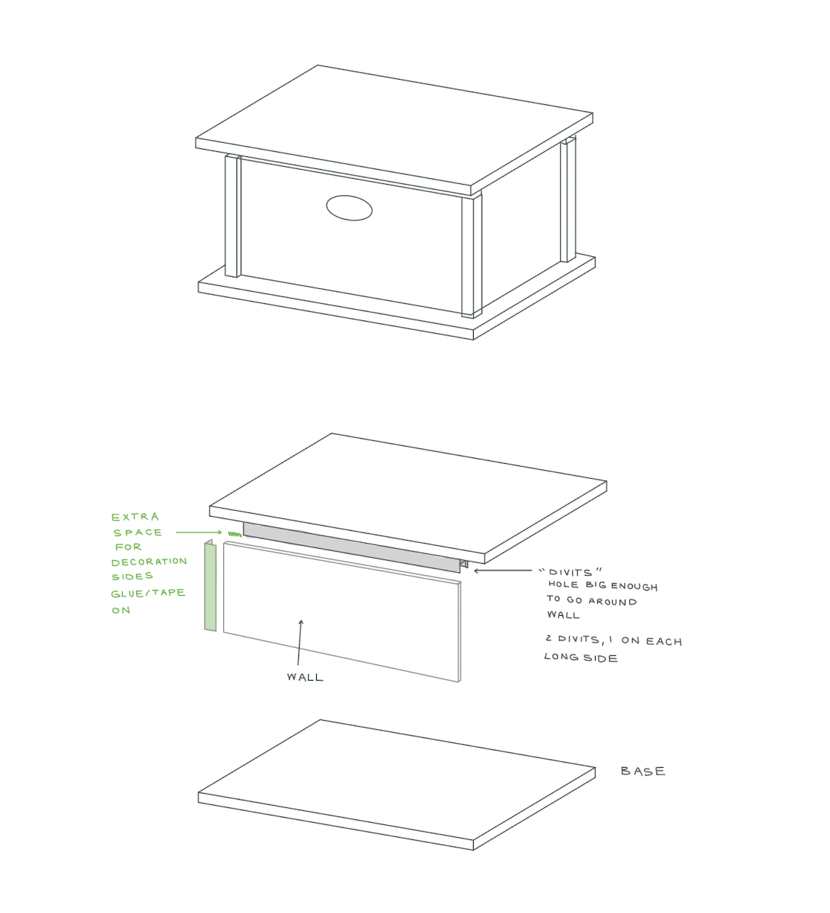

<div class="textcontainer">
<p class="margin"> </p>
<h3>Week 2: 2D Design & Cutting</h3>
<p class="margin"> </p>
<div class="flexrow">
<a id="btn" href="./temp.zip" download>Download CAD Files
</a>
</div>
<p class="margin"> </p>
<h4>Part 1: Make a Box</h4>
We were tasked to create a shoebox-sized box.
This is the final design of my shoebox-sized box:
<p></p>
<p><br></p>
I started by designing a drawing for my box. I wanted it to feel like a vault, where you could
lift up a floating top and seal it with dividers. The following image shows my initial idea:
<p></p>

<p><br></p>
Next, I opened up a Autodesk Fusion project.
Before I began making the box, I needed to decide on measurements.
A typical box is 12 in. by 8 in. by 6 in., but here we use the metric system.
Shown below are the measurement parameters I used for the box. Units are shown both in mm and in inches, but mm were used for this project.
For the names:
<ol>
<li>"box" refers to the main four walls of the box</li>
<li>"base" refers to the large top and bottom pieces of the box that extend beyond the walls</li>
<li>"divit" refers to the strips of cardboard attached to the top base to mimic a vault being sealed</li>
<li>"hole" refers to the hole on the front-facing wall</li>
<li>"post" refers to the strips of cardboard placed on the outside corners of the walls for decoration</li>
<li>"cardboard thickness" accounts for the thickness of the cardboard</li>
</ol>
<p><br></p>
<table class="myTable">
<tr><th>Name</th><th>Value (mm)</th><th>Value (inches)</th></tr>
<tr><td>boxLength</td><td>304.8</td><td>12</td></tr>
<tr><td>boxWidth</td><td>152.4</td><td>6</td></tr>
<tr><td>boxHeight</td><td>203.2</td><td>8</td></tr>
<tr><td>baseLength</td><td>342.9</td><td>13.5</td></tr>
<tr><td>baseWidth</td><td>190.5</td><td>7.5</td></tr>
<tr><td>baseExtension</td><td>25.4</td><td>1</td></tr>
<tr><td>divitLength</td><td>190.5</td><td>7.5</td></tr>
<tr><td>divitHeight</td><td>31.75</td><td>1.25</td></tr>
<tr><td>holeLength</td><td>75</td><td>2.95...</td></tr>
<tr><td>holeWidth</td><td>25</td><td>0.984...</td></tr>
<tr><td>holeCenterFromTop</td><td>88.9</td><td>3.5</td></tr>
<tr><td>postWidth</td><td>31.75</td><td>1.25</td></tr>
<tr><td>cardboardThickness</td><td>5</td><td>0.19685...</td></tr>
</table>
Once I inserted these as paramters into Autodesk fusion, it was time to make the box.
To get the CAD-design of the box, download it from the button above. There is
both a 2D version and a 3D version available for download. The 3D version is shown below:
<p><br></p>
<p><br></p>
Once the CAD was created, on the 2D box version, I clicked Sketches, then Export as DXF.
I downloaded the DXF file onto a USB and opened Rhino software to specify how to cut the lines.
Here are the steps once you open Rhino for a new project:
<ol>
<li>Import the DXF file</li>
<li>Click and drag to highlight the drawing, then type the command "Explore" in the top-left corner to break the drawing into lines</li>
<li>Type the comamnd "SelDup" for it to select all duplicate lines, then delete those duplicate lines</li>
<li>Click and drag to highlight all the lines, then choose the cut as "cut" to cut all the way through </li>
<li>Click the middle-lines for the four posts, then modify the cut from "cut" to "score"</li>
<li>Select print, then print to get ready for the laser cutter.</li>
</ol>
<p><br></p>
Grab a piece of cardboard and measure its thickness. For my cardboard, it measured 4.64mm. Place in laser cutter.
On the laser cutter, handle proper safety ventilation.
On the laser cutter software, import the Rhino file and set the following values:
<ol>
<li>Z-Score: based on height from cardboard to laser, mine was 1.1mm.</li>
<li>Material: general medium-wood will suffice if "cardboard" is not an option</li>
<li>Thickness: if general medium-wood was selected, do about 1-1.5 mm less than the actual cardboard thickness. I chose 3mm.</li>
</ol>
Once the laser cut is done, take out all pieces. Here is the disassembled version. Grab some glue and/or tape as well.
<p><br></p>
<p><br></p>
Now the fun part: assemble! In my assembly, I chose for better support to have the inner divits go horizontal and not vertical.
Feel free to make any changes or additions you desire.
<p><br></p>
<p><br></p>
<p><br></p>
<h4>Part 2: Fusion 360 Tutorial</h4>
We were tasked to work through a Fusion 360 tutorial.
I chose <a href="https://www.youtube.com/watch?v=d3qGQ2utl2A&t=38s">this tutorial</a> to make a Toy Block, since I loved playing with
Legos when I was younger (I still do, I'll admit).
After following the tutorial, I produced this result:
<p></p>
<p><br></p>
To see the CAD file for the Toy Block, click the button at the top of this page to download a .zip.
Open the .zip and select the appropriately-named f3d file for the Toy Block.
<p><br></p>
<h4>Part 3: Fusion Modeling</h4>
We were tasked to select 2 or more household objects/components from the lab and create models/assemblies of them.
One idea for my final project was to create a wand to light up light-bulbs from afar. Therefore, I chose a sledge hammer and a glue-bottle to mimic the items I need. They are pictured below:
<p></p>
<p><br></p>
I measured them using calipers. The results of their dimensions are shown below:
Note that the handle length of the sledge hammer was too long for the caliber. I measured it therefore in two
ways: one using a ruler, and one using a mark on the hammer to do 2 separate measurements by caliber, then added up.
Both produced approximately the same result, and the caliber measurement is shown below.
All values are shown to the hundredths place, not rounded.
Here is when I used what part of the caliber:
<ol>
<li>Inner caliber: the measurement was on the inner of an object, such as measuring radius, width, or length on a concave/bowl-like surface</li>
<li>Outer caliber: the measurement was on the outer-part of an object</li>
<li>Depth-tail: the measurement was for height/depth and the outer caliber or inner caliber could not fit</li>
</ol>
<p><br></p>
For the Sledge Hammer:
<ol>
<li>The handle was simplified as an extruded circle</li>
<li>The sledge was simplified as an extruded circle</li>
</ol>
<table class="myTable">
<tr><th>Sledge Hammer Parts</th><th>Value (mm)</th><th>Part of Caliber</th></tr>
<tr><td>HandleRadius</td><td>15.01</td><td>Inner Caliber</td></tr>
<tr><td>HandleLength</td><td>264.12</td><td>Outer Caliber</td></tr>
<tr><td>SledgeRadius</td><td>31.00</td><td>Inner Caliber</td></tr>
<tr><td>SledgeLength</td><td>93.70</td><td>Outer Caliber</td></tr>
</table>
<p><br></p>
For the Glue Bottle:
<ol>
<li>The glue container was simplified as an extruded oval</li>
<li>The cap (brown part in the above photo) was simplified as an extruded circle</li>
<li>The tip (white part in the above photo) was simplified as an extruded circle</li>
</ol>
<table class="myTable">
<tr><th>Glue Bottle Parts</th><th>Value (mm)</th><th>Part of Caliber</th></tr>
<tr><td>ContainerHalfWidth</td><td>15.29</td><td>Inner Caliber</td></tr>
<tr><td>ContainerHalfLength</td><td>30.02</td><td>Inner Caliber</td></tr>
<tr><td>ContainerHeight</td><td>99.83</td><td>Outer Caliber</td></tr>
<tr><td>CapRadius</td><td>15.59</td><td>Inner Caliber</td></tr>
<tr><td>CapHeight</td><td>15.57</td><td>Outer Caliber</td></tr>
<tr><td>TipRadius</td><td>8.5</td><td>Inner Caliber</td></tr>
<tr><td>TipHeight</td><td>31.17</td><td>Depth-Tail</td></tr>
</table>
<p><br></p>
Shown below are some photos I took during the caliber process:
<div class="img-container">
</div>
<p><br></p>
After the calipers, opened Autodesk Fusion. From here, I did the following steps:
<ol>
<li>I clicked "Create Sketch" to make sketches for all the 2D-shapes</li>
<li>For each shape, I extruded it and joined it with its object (join it to either the "Glue Bottle" body pieces or the "Sledge Hammer" body pieces)</li>
<li>Once the two bodies were made, I clicked both and converted them to components to make an assembly.</li>
</ol>
There was no need to join the assembly components with joints, as by the nature of this final project, they will be separated in air.
Here is the image of the assembly. To download the assembly, click the button at the top of this screen and download Part 3's DXF file.
<p></p>
<p><br></p>
</div>